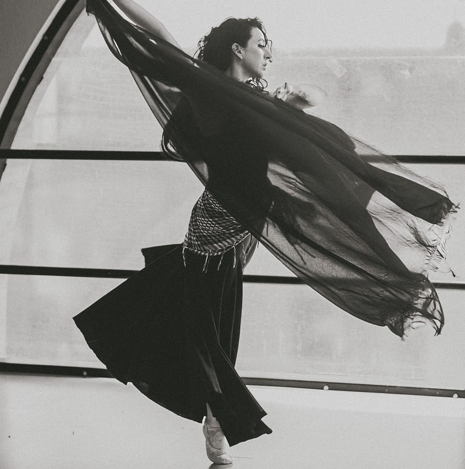

CURSOS DE CANTO
Impartido por un artista profecional con muchos años de experiencia en el campo de la música. Aprenderás técnicas vocales, respiración y expresión artística. El curso está diseñado para todos los niveles, desde principiantes hasta avanzados.
contacto: dariovelasco@gmail.com

CURSOS DE VIOLIN
Impartido por un gran artista internacional con años de experiencia. Aprente claves y tecnicas desde lo mas basico, para toda edad, aprende desde los primeros movimientos basicos
contact:ramiroviolin@gmail.com

CURSOS DE MACRAME
Impartido por una gran profecional en la materia, com muchos años de experiencia, reconocida internacionalmente. Aprenderas los nudos basicos desde cero, podras crear tus propios diseños, carteras, bizuteria y lo que tu imaginación alcance
contacto: catitamacrame@gmail.com

CURSOS DE PINTURA
Impartido por un gran artista plastico, com muchos años de experiencia, a realizado muchas exposiciones en todo el pais. Aprenderas diversas tecnicas de pintura, diseñado para toda edad
contacto: ivancreacion@gmail.com

CLASES DE TROMPETA
Impartido por un gran artista internacional con años de experiencia. Aprenderás técnicas de respiración, digitación y expresión musical. El curso está diseñado para todos los niveles, desde principiantes hasta avanzados.
contacto:erickcuevas@gmail.com

CLASES DE DANZA
Impartido por una gran artista de renombre internaciona, creadora de "Danza politica" podras aprendrer diferentes tecnicas de danza comtemporanea y clasisca
contacto:matrialibre@gmail.com